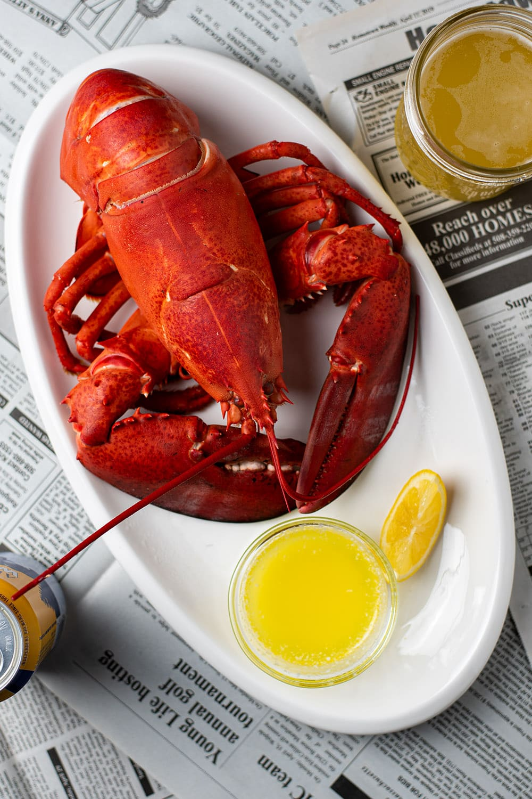

Steamed Lobsters

Red Steamed Lobsters, a New England classic. Not much needs to be done to have this delicious dish.
Ingredients
Steps
- Humanely kill the lobster.
- Fill a pot with salted water, enough to cover lobster(s), and get it to a rapid boil.
- Boil for 7 minutes, or until tail is completely red.